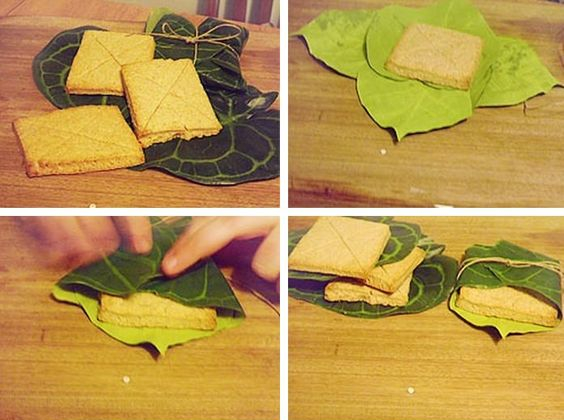

LEMBDAS BREAD

Make your own Lembdas Bread, the bread eaten by the Elves, from Lord of the Rings Online!
INGREDIENTS
- 320g of flour
- 110g of butter
- 150h of heavy cream
- 70g of brown sugar
- 2g of salt
- 3g of cinnamon
- 3.5g of honey
- 14g of baking powder
STEPS
- Preheat the oven to 220°C
- Mix flour, baking powder, and salt in a large bowl. Add butter and mix well till fine granules. Add sufar and cinnamon to mixture, and mix thoroughly.
- Add cream, honey and vanilla, and stir till thick dough forms.
- Roll dough till about 1cm thickness. Cut into 8cm squares and transfer to cookie sheet.
- With a knife, add a criss cross indentetion on the lembdas squares, and then put to bake for 12 minutes, longer if not yet lightly golden.